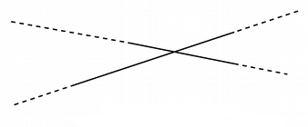
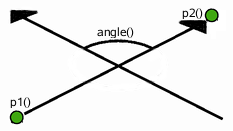
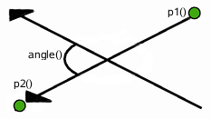

QLineF¶
Synopsis¶
Functions¶
- def
__eq__(d) - def
__mul__(, m) - def
__mul__(, m) - def
__ne__(d) - def
__reduce__() - def
__repr__() - def
angle() - def
angle(l) - def
angleTo(l) - def
center() - def
dx() - def
dy() - def
intersect(l) - def
isNull() - def
length() - def
normalVector() - def
p1() - def
p2() - def
pointAt(t) - def
setAngle(angle) - def
setLength(len) - def
setLine(x1, y1, x2, y2) - def
setP1(p1) - def
setP2(p2) - def
setPoints(p1, p2) - def
toLine() - def
toTuple() - def
translate(dx, dy) - def
translate(p) - def
translated(dx, dy) - def
translated(p) - def
unitVector() - def
x1() - def
x2() - def
y1() - def
y2()
Detailed Description¶
The
PySide2.QtCore.QLineFclass provides a two-dimensional vector using floating point precision.A
PySide2.QtCore.QLineFdescribes a finite length line (or line segment) on a two-dimensional surface.PySide2.QtCore.QLineFdefines the start and end points of the line using floating point accuracy for coordinates. Use thePySide2.QtCore.QLineF.toLine()function to retrieve an integer based copy of this line.
The positions of the line’s start and end points can be retrieved using the
PySide2.QtCore.QLineF.p1(),PySide2.QtCore.QLineF.x1(),PySide2.QtCore.QLineF.y1(),PySide2.QtCore.QLineF.p2(),PySide2.QtCore.QLineF.x2(), andPySide2.QtCore.QLineF.y2()functions. ThePySide2.QtCore.QLineF.dx()andPySide2.QtCore.QLineF.dy()functions return the horizontal and vertical components of the line, respectively.The line’s length can be retrieved using the
PySide2.QtCore.QLineF.length()function, and altered using thePySide2.QtCore.QLineF.setLength()function. Similarly,PySide2.QtCore.QLineF.angle()andPySide2.QtCore.QLineF.setAngle()are respectively used for retrieving and altering the angle of the line. Use thePySide2.QtCore.QLineF.isNull()function to determine whether thePySide2.QtCore.QLineFrepresents a valid line or a null line.The
PySide2.QtCore.QLineF.intersect()function determines theQLineF.IntersectTypefor this line and a given line, while thePySide2.QtCore.QLineF.angleTo()function returns the angle between the lines. In addition, thePySide2.QtCore.QLineF.unitVector()function returns a line that has the same starting point as this line, but with a length of only 1, while thePySide2.QtCore.QLineF.normalVector()function returns a line that is perpendicular to this line with the same starting point and length.Finally, the line can be translated a given offset using the
PySide2.QtCore.QLineF.translate()function, and can be traversed using thePySide2.QtCore.QLineF.pointAt()function.


Constraints¶
PySide2.QtCore.QLineis limited to the minimum and maximum values for theinttype. Operations on aPySide2.QtCore.QLinethat could potentially result in values outside this range will result in undefined behavior.
-
class
PySide2.QtCore.QLineF¶ -
class
PySide2.QtCore.QLineF(line) -
class
PySide2.QtCore.QLineF(QLineF) -
class
PySide2.QtCore.QLineF(pt1, pt2) -
class
PySide2.QtCore.QLineF(x1, y1, x2, y2) Parameters: - x2 –
PySide2.QtCore.qreal - pt2 –
PySide2.QtCore.QPointF - line –
PySide2.QtCore.QLine - pt1 –
PySide2.QtCore.QPointF - x1 –
PySide2.QtCore.qreal - y2 –
PySide2.QtCore.qreal - y1 –
PySide2.QtCore.qreal - QLineF –
PySide2.QtCore.QLineF
Constructs a null line.
Construct a
PySide2.QtCore.QLineFobject from the given integer-basedline.See also
Constructs a line object that represents the line between
p1andp2.Constructs a line object that represents the line between (
x1,y1) and (x2,y2).- x2 –
-
PySide2.QtCore.QLineF.IntersectType¶ Describes the intersection between two lines.

 Constant Description QLineF.NoIntersection Indicates that the lines do not intersect; i.e. they are parallel. QLineF.UnboundedIntersection The two lines intersect, but not within the range defined by their lengths. This will be the case if the lines are not parallel. PySide2.QtCore.QLineF.intersect()will also return this value if the intersect point is within the start and end point of only one of the lines.Constant Description QLineF.BoundedIntersection The two lines intersect with each other within the start and end points of each line. See also
-
PySide2.QtCore.QLineF.__reduce__()¶ Return type: PyObject
-
PySide2.QtCore.QLineF.__repr__()¶ Return type: PyObject
-
PySide2.QtCore.QLineF.angle(l)¶ Parameters: l – PySide2.QtCore.QLineFReturn type: PySide2.QtCore.qrealReturns the angle (in degrees) between this line and the given
line, taking the direction of the lines into account. If the lines do not intersect within their range, it is the intersection point of the extended lines that serves as origin (seeQLineF.UnboundedIntersection).  When the lines are parallel, this function returns 0 if they have the same direction; otherwise it returns 180.
See also
-
PySide2.QtCore.QLineF.angle() Return type: PySide2.QtCore.qrealReturns the angle of the line in degrees.
The return value will be in the range of values from 0.0 up to but not including 360.0. The angles are measured counter-clockwise from a point on the x-axis to the right of the origin (x > 0).
See also
-
PySide2.QtCore.QLineF.angleTo(l)¶ Parameters: l – PySide2.QtCore.QLineFReturn type: PySide2.QtCore.qrealReturns the angle (in degrees) from this line to the given
line, taking the direction of the lines into account. If the lines do not intersect within their range, it is the intersection point of the extended lines that serves as origin (seeQLineF.UnboundedIntersection).The returned value represents the number of degrees you need to add to this line to make it have the same angle as the given
line, going counter-clockwise.See also
-
PySide2.QtCore.QLineF.center()¶ Return type: PySide2.QtCore.QPointFReturns the center point of this line. This is equivalent to 0.5 *
PySide2.QtCore.QLineF.p1()+ 0.5 *PySide2.QtCore.QLineF.p2().
-
PySide2.QtCore.QLineF.dx()¶ Return type: PySide2.QtCore.qrealReturns the horizontal component of the line’s vector.
-
PySide2.QtCore.QLineF.dy()¶ Return type: PySide2.QtCore.qrealReturns the vertical component of the line’s vector.
-
static
PySide2.QtCore.QLineF.fromPolar(length, angle)¶ Parameters: - length –
PySide2.QtCore.qreal - angle –
PySide2.QtCore.qreal
Return type: Returns a
PySide2.QtCore.QLineFwith the givenlengthandangle.The first point of the line will be on the origin.
Positive values for the angles mean counter-clockwise while negative values mean the clockwise direction. Zero degrees is at the 3 o’clock position.
- length –
-
PySide2.QtCore.QLineF.intersect(l)¶ Parameters: l – PySide2.QtCore.QLineFReturn type: (intersectType, intersectionPoint) Returns a value indicating whether or not this line intersects with the given
line.The actual intersection point is extracted to
intersectionPoint(if the pointer is valid). If the lines are parallel, the intersection point is undefined.
-
PySide2.QtCore.QLineF.isNull()¶ Return type: PySide2.QtCore.boolReturns
trueif the line is not set up with valid start and end point; otherwise returnsfalse.
-
PySide2.QtCore.QLineF.length()¶ Return type: PySide2.QtCore.qrealReturns the length of the line.
See also
-
PySide2.QtCore.QLineF.normalVector()¶ Return type: PySide2.QtCore.QLineFReturns a line that is perpendicular to this line with the same starting point and length.
See also
-
PySide2.QtCore.QLineF.__ne__(d)¶ Parameters: d – PySide2.QtCore.QLineFReturn type: PySide2.QtCore.boolReturns
trueif the givenlineis not the same as this line.A line is different from another line if their start or end points differ, or the internal order of the points is different.
-
PySide2.QtCore.QLineF.__mul__(m)¶ Parameters: m – PySide2.QtGui.QMatrixReturn type: PySide2.QtCore.QLineF
-
PySide2.QtCore.QLineF.__mul__(m) Parameters: m – PySide2.QtGui.QTransformReturn type: PySide2.QtCore.QLineF
-
PySide2.QtCore.QLineF.__eq__(d)¶ Parameters: d – PySide2.QtCore.QLineFReturn type: PySide2.QtCore.boolReturns
trueif the givenlineis the same as this line.A line is identical to another line if the start and end points are identical, and the internal order of the points is the same.
-
PySide2.QtCore.QLineF.p1()¶ Return type: PySide2.QtCore.QPointFReturns the line’s start point.
-
PySide2.QtCore.QLineF.p2()¶ Return type: PySide2.QtCore.QPointFReturns the line’s end point.
-
PySide2.QtCore.QLineF.pointAt(t)¶ Parameters: t – PySide2.QtCore.qrealReturn type: PySide2.QtCore.QPointFReturns the point at the parameterized position specified by
t. The function returns the line’s start point if t = 0, and its end point if t = 1.
-
PySide2.QtCore.QLineF.setAngle(angle)¶ Parameters: angle – PySide2.QtCore.qrealSets the angle of the line to the given
angle(in degrees). This will change the position of the second point of the line such that the line has the given angle.Positive values for the angles mean counter-clockwise while negative values mean the clockwise direction. Zero degrees is at the 3 o’clock position.
See also
-
PySide2.QtCore.QLineF.setLength(len)¶ Parameters: len – PySide2.QtCore.qrealSets the length of the line to the given
length.PySide2.QtCore.QLineFwill move the end point -PySide2.QtCore.QLineF.p2()- of the line to give the line its new length.If the line is a null line, the length will remain zero regardless of the length specified.
-
PySide2.QtCore.QLineF.setLine(x1, y1, x2, y2)¶ Parameters: - x1 –
PySide2.QtCore.qreal - y1 –
PySide2.QtCore.qreal - x2 –
PySide2.QtCore.qreal - y2 –
PySide2.QtCore.qreal
Sets this line to the start in
x1,y1and end inx2,y2.- x1 –
-
PySide2.QtCore.QLineF.setP1(p1)¶ Parameters: p1 – PySide2.QtCore.QPointFSets the starting point of this line to
p1.
-
PySide2.QtCore.QLineF.setP2(p2)¶ Parameters: p2 – PySide2.QtCore.QPointFSets the end point of this line to
p2.
-
PySide2.QtCore.QLineF.setPoints(p1, p2)¶ Parameters: - p1 –
PySide2.QtCore.QPointF - p2 –
PySide2.QtCore.QPointF
Sets the start point of this line to
p1and the end point of this line top2.- p1 –
-
PySide2.QtCore.QLineF.toLine()¶ Return type: PySide2.QtCore.QLineReturns an integer based copy of this line.
Note that the returned line’s start and end points are rounded to the nearest integer.
See also
PySide2.QtCore.QLineF.QLineF()
-
PySide2.QtCore.QLineF.toTuple()¶ Return type: PyObject
-
PySide2.QtCore.QLineF.translate(p)¶ Parameters: p – PySide2.QtCore.QPointFTranslates this line by the given
offset.
-
PySide2.QtCore.QLineF.translate(dx, dy) Parameters: - dx –
PySide2.QtCore.qreal - dy –
PySide2.QtCore.qreal
This is an overloaded function.
Translates this line the distance specified by
dxanddy.- dx –
-
PySide2.QtCore.QLineF.translated(p)¶ Parameters: p – PySide2.QtCore.QPointFReturn type: PySide2.QtCore.QLineFReturns this line translated by the given
offset.
-
PySide2.QtCore.QLineF.translated(dx, dy) Parameters: - dx –
PySide2.QtCore.qreal - dy –
PySide2.QtCore.qreal
Return type: This is an overloaded function.
Returns this line translated the distance specified by
dxanddy.- dx –
-
PySide2.QtCore.QLineF.unitVector()¶ Return type: PySide2.QtCore.QLineFReturns the unit vector for this line, i.e a line starting at the same point as this line with a length of 1.0.
See also
-
PySide2.QtCore.QLineF.x1()¶ Return type: PySide2.QtCore.qrealReturns the x-coordinate of the line’s start point.
See also
-
PySide2.QtCore.QLineF.x2()¶ Return type: PySide2.QtCore.qrealReturns the x-coordinate of the line’s end point.
See also
-
PySide2.QtCore.QLineF.y1()¶ Return type: PySide2.QtCore.qrealReturns the y-coordinate of the line’s start point.
See also
-
PySide2.QtCore.QLineF.y2()¶ Return type: PySide2.QtCore.qrealReturns the y-coordinate of the line’s end point.
See also
© 2018 The Qt Company Ltd. Documentation contributions included herein are the copyrights of their respective owners. The documentation provided herein is licensed under the terms of the GNU Free Documentation License version 1.3 as published by the Free Software Foundation. Qt and respective logos are trademarks of The Qt Company Ltd. in Finland and/or other countries worldwide. All other trademarks are property of their respective owners.